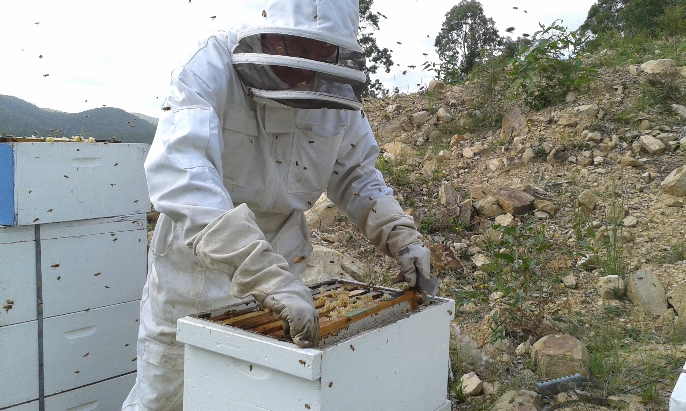
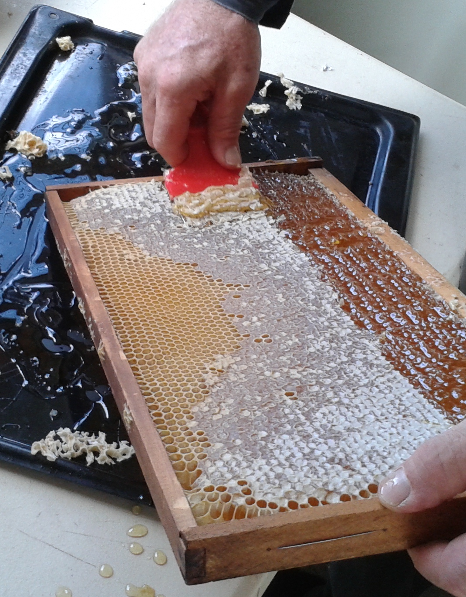
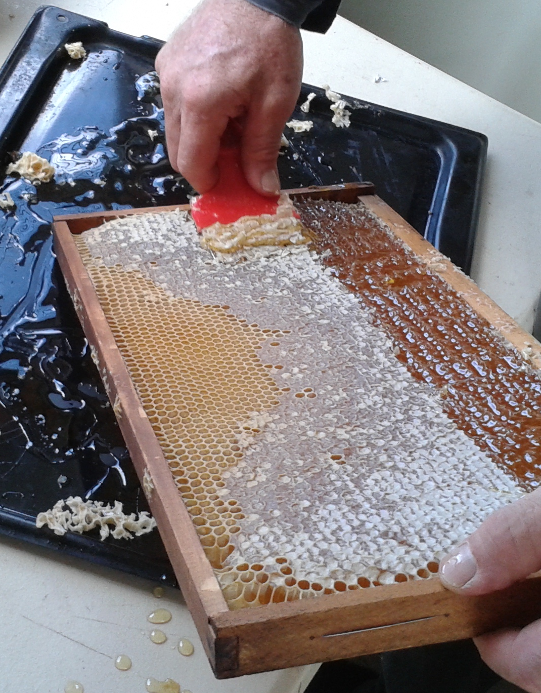
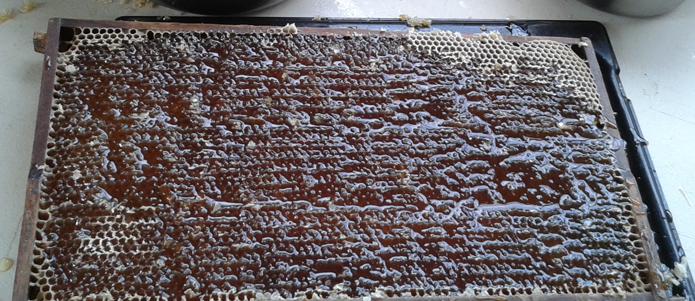

Little River Honey Australia
Phone: 0414 491299 | Email: nealejones@bigpond.com |
Get some honey! |
|---|---|---|
Up at our 'Little River' property, in the hills about 22 kilometers North-west of Bulahdelah, NSW, we keep an average of 17 hives of bees all year round. We look after the bees and help them to control insect invaders, bee diseases and adverse weather conditions.
These hives provide us with a great supply of Native Hardwood forest honey that we sell to health conscious people in many parts of Australia.. There are no genetically modified plants in the forage area of the bees and no chemicals are used in or near the hives.
The native hardwood forest on our property consists primarily of Ironbark, Bloodwood, White Mahogany, Bluegum, Grey Gum, Spotted Gum, Tallowood and Brush box. These Australian native trees flower irregularly, but when they do flower, they produce vast quantities of blossom with the associated copious quantities of nectar which our bees collect enthusiastically.

When a Eucalypt species is blossoming, the bees cannot be distracted. There is a sense of excitement in the air as the tree tops hum with every available bee collecting nectar and pollen from dawn until dark.
Our bees are not moved from place to place on a truck and hence do not suffer the associated stress of moving. As a result our honey will retain the local hardwood forest flavours of the Upper Myall Catchment. We do not feed sugar to the bees as some others do. We make sure that we leave enough honey in the hive so the bees do not go hungry when the flowers are less plentiful over winter.
The Hives
Each bee hive has between 30,000 to 50,000 bees. Only one of these bees is the queen bee who lays all of the eggs. All of the other bees in the hive are her children, A few thousand are Drones (male bees) and the rest are immature females known as worker bees that do every thing that needs doing around the hive. They feed the queen, the drones and the growing baby bees, They produce honey comb in an intricate hexagonal pattern and store honey for later when the nectar is less plentiful. The bee eggs take about 3 weeks to grow through the larval stage and hatch. The worker bees then live for about 6 weeks. The queen bee can keep laying for a few years, but is usually replaced after 2 or 3 years.
Honey Extraction.
When the hive is full of honey, we carefully remove the capped surplus honey frames from the bee hives and extract the honey on the same day using a small stainless steel centrifuge. We fill the jars about a week later after some settling and filtering through a 500micron stainless steel sieve.
 

This honey is as natural as it gets. Everything we do between the bee hives, and the jars is done without adding heat. We do not use hot knives, and we don’t pasteurise, or heat-treat the honey in any way.
Everything is done as simply as possible at a steady slow pace to keep the bees calm and to preserve the natural qualities of the honey that the bees have produced. This honey is as pure and natural as honey can be. As a result, the flavours of the various flowers are retained in our honey and the characteristic flavours of species such as Ironbark, Blood wood and Spotted gum can be clearly identified.


Candied (Crystalised) Honey.
This honey can, and does go 'Candy' (or crystalise) after some time - Only pure unprocessed honey does this. The jar can be placed in warm (not boiling) water to re-liquify if needed - Please don't use the microwave as that will destroy many of the natural health benefits of the honey.
Edible honey has been found in the Egyptian tombs, so it is has an excellent shelf life.
Health Benefits
Pure, Raw, Natural Honey has inherent anti-viral, anti-bacterial, and anti-fungal properties. It promotes body and digestive health, is a powerful antioxidant, can be used to control pollen allergies, and is an excellent natural remedy for topical application on skin wounds, burns, ulcers and many other types of infections.
We hope you enjoy the taste as much as we do.
Phone: 0414 491299 | Email: nealejones@bigpond.com |
Get some honey! |
|---|---|---|